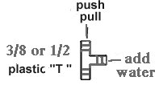
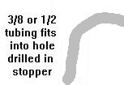
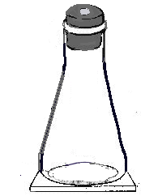
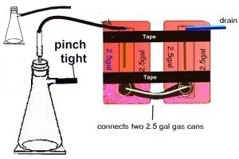
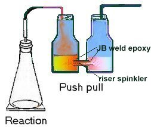
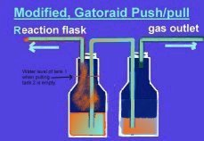
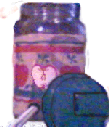
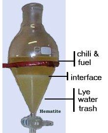
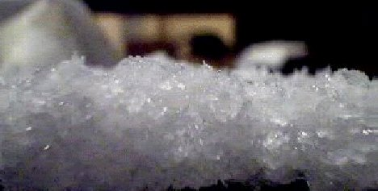

The Reaction
At this point, you may begin dreaming in the alpha state of mind , not
unconscious sleep but an aware state of peaceful relaxation,, If you choose
to come out of the alpha state, simply flex your arms and you will awaken,
alert , feeling well rested and happy.
Flask
The flask used is often a flat bottom with a rubberized stopper, florence
, erlenmeyer, or a vacuum flask.
The flask can be almost any glass device such as a bottle, champagne
bottles are preferred because the can handle the pressure. Buy flasks
and stoppers at a Home beer and wine brewing supplier. Coke bottles can
be fit with a single large diameter hose leading outside for small batches
|
|
Weight of Ephedrine( gm) |
|
|
|
|
|
|
|
|
|
|
|
|
|
|
|
|
|
|
|
|
|
The larger the flask the more important it is to heat it evenly, A new
large flask will break on a hot plate that is too small.
In one week I broke a 12 liter and a 6 liter flask because I used heat
to get difficult reactants to fire up. Better would have been to increase
the iodine and RP.
If you have a poor quality reactant it is best to increase the amount
of the poor reactant a little, and to increase the amount of the good reactant
a lot. It does not help to add a lot of a shitty reactant
Stopper and hose
The stopper has a hole in it, to vent the gasses into the push/pull
tanks, or to the outside.
For the push pull ,It is fitted with a 3 foot length of 1/2 inch, or 3/8 inch braided food grade plastic hose type tubing. Almost any type of tubing may be used. It is variable. but needs to be somewhat stiff so it will not collapse
If venting outside usually a 15 to 20 foot hose, longer is fine. can be thin walled since collapsing won't be a big factor
The main thing is it should be clean, fairly new, and in good shape,
and fit the stopper .
A dirty deteriorating hose will taint your reaction with particles
of a deteriorated plastic hose, nasty.
Home depot has rubber stoppers all sizes


Filter flasks work very well for a reaction flask but are sensitive
to heat and may crack.
Larger flasks are sensitive to uneven heating and are more difficult
to heat evenly.
A 12 Liter flask on a small hot plate will heat unevenly and crack.
whereas a 6 liter will do fine on the same hot plate
Push Pull unit
The tubing extends from the reaction flask to the push/pull unit which
is a gas trap, and pressure stabilizer.
The gas outlet may lead outside, or into the sewer.
Large quantities of Iodine can be recovered from these.
Here are examples of basic push/pull designs.
direct
direct
siphon

The hose leading to the push pull unit can attach to the side
port or the top.
If attached to the side, the main top opening can be used to add water
or reagents.
Notice that the two hoses, one hose leading to the reaction
flask, and the other leading to the drain are very
near the top of the push pull units, to prevent push pull
water from being sucked into the hoses.
Use only enough water, so that if all the water
ends up being pulled into the first tank, it will not be sucked into the
reaction hose,
Only fill each of the tanks 1/3 to 1/2 full of water
or
Fill the first flask 3/4 full and leave the second flask empty
Sizes of push pull units- This is only generalized
information, gathered from 20 or so different p/p units used. No actual
experiments were performed, the units were built and used.
Of the above designs the "direct connection" is much more sensitive
to the pressure changes. The siphon designed tanks generally will
not respond to the pull, and they require more pressure to move the fluids
on the push. In addition the dual connections through the top with
the increased pressure leads to gas leaks.
The direct connection is best.
A pair of 5 gallon water jugs with a siphon tube never did bubble any
air into the second tank and seemed to slow the reaction down.
The 1 gallon tea jugs are great for up to 4 ounces of E
Already
have the hole near the bottom to join the two tanks and an easy to
drill plastic top.
Less than one ounce - run the hose to the outside do the
reaction at night, or two 1 liter bottles
1-2 ounces - two 2 liter soda bottles
2-4 ounces - two 1 gallon glass tea jugs
4 to 16 ounces- two 2-1/2 gallon gas cans -- This is probably
the ideal size
1 gallon water jugs will collapse
Only
two tools are used to purify chili the separatory funnel and the filter.
A caveman version uses a 2 liter coke bottle, with a small hole
in the cap operated with your finger. or Rubbermaid plastic container ..
The separatory funnel is best because of it's shape near the bottom , allows
you to cut it off at the exact drop you want. Do not wash this with a soap
or detergent or you will have Gakk in your chili.
To remove Gakk see re-crystallization
|
|
|
|
|
|
|
|
|
Tincture or poor quality of chems --- Matchbook RP use 2x -3x normal amount |
|
|
|
|
My favorite uses excess iodine- this insures a spontaneous reaction, and complete conversion of E to Meth |
|
|
|
|
4 oz or more good chemicals - methhead's suggested ratios |
|
|
|
|
Lowest amount of RP used to convert 6+ ounces |
|
|
|
|
What to use for less than an Oz |
Remember the second time around for the RP it will contain Iodide unless
well cleaned and dried , and therefore the actual amount of the RP is much
less.
Because of the Iodide weight . So add 2x the RP if it was pre-used
and not cleaned.
If the RP was washed in acetone and water then dried it is almost good
as new add 10% more RP for used
Some bad news 92% is the top yield of chili by weight, theoretically
possible
It is common to obtain between 50% to 75% chili by weight
and rarely 85%
The addition of aluminum to the reaction reduces the amount of
RP needed, 5-6 soda can pop tops / oz of E
Water
The reaction may go without any water added, this is true if
using iodine from tincture, or if the humidity is high the E and RP adsorb
enough water to fire the reaction.
The common mistake is adding too much water, and not getting any
reaction. Mix the reagents dry, if the reaction does not fire, then add
1-3 ml distilled water /ounce of E.
The mixture should be very damp, a thick mud, but
not wet.
As it fires off , the first thing that happens is it liquefies, and
becomes wet, so you want to start out as a thick mud, then let the
reaction thin itself out.
This is such a touchy part of the reaction, experience is the only way
to be sure
If the reaction still does not fire, Use heat, do not add more water,
yet.
If heat does not do it or the mixture is very dry still add another
1-3 ml of water/ oz of E/
Then try heat again .
Keep alternating until it is goo like melted taffy. this should fire
with heat. for sure.
At that point re-evaluate your three main items ( E, I2, and RP) are
any of them the potential problem? If not
The last resort is to reflux it for a few hours.
The quality of the water is extremely important to the quality of the
chili, and to the yield.
Always used distilled water, and for even better results run the distilled
water through a Britta water filter to remove metals, and other trash
Hydrogen Peroxide
If using recycled phosphorus some suggest using a capful of hydrogen
peroxide also.
I suggest you avoid using peroxide at all, if possible. The reason
is peroxide in an acid environment will digest many organic molecules.
In addition peroxide will oxidize the RP,
In the reaction the peroxide will change HI into I2.
Any HI that is not mixed in with E and RP is useless in the reaction
and is escaping This includes all the HI that is above the
reagents. The HI is only of value while it is being recycled within the
reagents.
The bad aspect of heat, is that it tends to vaporize the HI . HI has
a boiling point of 117 C but this is a 58% solution with water.
The concentrations of HI you are using is many times above that. 4
to 6.5 molar
By adding peroxide some of this HI may be washed down into the flask
as I2.
Peroxide will also strip off organic molecules that may be stuck
on the RP like wax, this refreshes the RP at the same time providing
I2,
and may be enough to kick in a dying reaction.
Additional heat is my preference. But try it and judge for yourself.
Cautionary Notes
Be prepared, the RP hitting the I2 will often start the reaction.
It may be impossible to see inside the flask, either from vapors
or the rise of reactants. Either way, if the surface of the reactants contents
can not be seen, act fast, because seconds count, shake it hard.,
or swirl the contents Keep swirling until you can determine what
is going on. Look for a nice easy bubbling. If you fail to shake
it down you will end up with very little, because the thick smoke
indicates a fire is going on in the flask, this will destroy the E,
or the contents of the flask may have expanded and are going to soon blow
down the hose, Hard shaking will stop both of these situations allowing
you to regain control, If you hesitate all will be lost
If the mixture starts to rise up, too high, swirl it lightly
Shaking before it blows out of the flask will save your whole reaction
,
it will turn a potential disaster, into a laughable "won't
do that shit, again" story
Phosphorous fire confined to a flask
Too hot of a reaction
vaporous HI acid and Phosphine (not phosgene)
Phosphorous fire not confined to a flask
The Reaction .
. . . This reaction is exciting, and rapid. You must really focus your
attention at this point. It is of -primary importance, that you have your
wits about you. It is most difficult sometimes to determine if the
reaction went to completion, so observe as much as possible and you will
be able to make a determination.
The
mythical chili of the ancient gods, as legend has
it, is that the mixture is so perfect that the energy provided by
the light of a star was sufficient.
The sun god preferred to mix at night , when the first ray of
light at dawn struck the flask the reaction began.
Most were satisfied to prepare the mixture during a storm and then
step to a window and allow the light from a lightning bolt begin the reaction/
Today we modern people are more scientific, and most rely on the sound
coming from a Lynrd Skynrd CD.
Be sure to read Methhead's reaction, and
Placebos
reactions they are the best walk through. The steps presented
here are the same. It may not seem so initially, this is because so many
side notes and explanation are presented, here that it becomes hard
or impossible to follow along as a recipe., and to see the step by step
reaction again. So use the recipes provided, improvise as you see fit.
As you become more familiar with the process, this site will take on increased
value to you. Eventually you will have the steps memorized, then you will
be able to note subtle differences between the procedures, You will
appreciate the explanations here, they will seem to suddenly answer many
questions you have.
Preparation and initiation of
the phase one reaction
Heating the reactants before mixing is very dangerous and is 10 x as dangerous if you are using free base E. It will blow. The free base has to be handled carefully and not forced to react in any way.
Variation - the common variation is to stir
or not to stir. Certainly some mixing is desirable and too much mixing
will quench the reaction. So somewhere in the middle find your niche between
mixing and keeping the reaction alive.
Definitely shake hard if things get out of control.
It is important to be there when the phase two
of the reaction kicks in, a little stirring here to keep the violent nature
to a minimum and keep the reaction going is the critical link for a great
yield or a pile of nothing at the end.
Left to its own turbulent nature , if it is in
a large flask the reaction will yield on the low side 50% to 70%.
With optimal mild swirling to control the turbulence
, the yield will approach 70% to 90% depending on the pills and other
factors.
Over stirring the reaction may not complete and
you receive only Ephedrine as a product.
Variation the application of heat is another area
of differing opinions , some use heat no matter what others avoid it like
the plague. The best method I believe is to simply add heat for a minute
of two when needed to keep the reaction going.
Use more if needed.
All agree that too high of a temperature is not
good for results.
To Avoid taking
more than one a pH reading and still end up with great chili (click
here)
Filtering
and Purifying the Product -- GaKK Patrol
Dirty glassware, poor reagents, sloppy technique, from this point on
affect your product in a big way.
If you use soaps or detergents on your glassware, you introduce a sulfate
that will turn your chili black and stinky when smoked
Wash glassware with water and rinse with acetone, if something is stuck
on the inside wash with acetone and salt, swirling the salt as an abrasive
then rinse super good..
At the end of the reaction, you may have heard of the chili being
called an oil, well it looks golden, like an oil,
but at this low pH (acidic), it is actually a water soluble salt of
iodine.
Considering the shitty quality of muriatic acid, it would be great to
distill your own.
If you are consistently getting dope that smokes burns dark and gakky
, consider the source of your HCl probably also contains sulfuric acid,
and you might consider gassing it instead or distill your HCl first.
Procedure Continued
In the Soviet Union and in much of Europe this is the final product, it is called Meth/acid. It is sold as a liquid , for injection, ingestion, or snorting. Now although the iodine is gone, it has been converted to iodide as a salt and some is still HI. They notice that after taking speed this way their joints are sore, muscle aches, skin eruptions, and a severely hungover feeling after coming down, They are lucky to be alive. The next step of basifying the mixture removes all those nasty iodides and most of the water soluble contaminants, and in Europe people will add bicarbonate to reduce the acidity of the mixture. Needless to say, they were sent the full instruction on how to clean up the meth/acid.Add 100 ml of water for every ounce of initial ephedrine after the reaction mixture has cooled. Boil the solution in a stove top safe glass bowl for 5-10 minutes, this will save you time by not having to refilter the mixture several times as noted below Filter using coffee filter and paper towel plug Re-filter through the same RP and filters again, continue refiltering until it has no added clearing effect. filtering should remove the cloudiness and most of the red color. It may require refilter 3 or 4 times. You end up with a clear yellow or colorless solution that can have many different odors. If you don't refilter you may leave iodine in the stuff. Recycle the red phosphorous it is still good.
Trouble - If it refuses to filter and it seems like iodine is everywhere!!! STOP, the reaction did not take. It is still possible to save your batch and obtain a good yield .
Collect the fluids, RP and iodine put back in flask, add more I2 and RP, and a condenser and begin boiling lightly for many hours (4 at least). You can even boil it in an open flask. You want to boil away most of the water. At the end of the boil,. it the contents are allowed to settle, there should be RP on the bottom and a yellow fluid on top. The yellow liquid is almost as viscous as motor oil.
SAVE everything until you are done and sure you have your chili Use a large glass or plastic vessel to store all the discharge in (a empty gallon water container is perfect)
Notes
After normal filtering, Take a strong flashlight and shine it through
the mixture, look for reddish particles indicating phosphorous
is still present. If it is there- Put a plug of a paper towel
in the funnel a few coffee filters and filter one more time, your flashlight
test will show no more phosphorous.
I
Contrary to some literature in Erowid's site, only the amines and very similar compounds have this unusual ability to freely change solubility from water to oil base when the pH is changed, the fact that this is an uncommon property is the reason the A/B has been so effective in thwarting DEA attempts to prevent the use of ephedrine.
Morphine, codeine , heroine, and cocaine are common
examples they have CH-CH skeletal structures with the N-H and OH groups
exposed.
The CH hydrocarbon chains and rings (aliphatic
and aromatic) are what is a non-polar polar molecule, like methane CH4,
or benzene C6H6
The -OH adds a degree of ionic polar like quality
as in methanol CH3-OH, or phenol C6H5-OH.
But it is the mainly the nitrogen =NH changing
to =NH2+ in the presence of excess H+(acid) that gives the legendary Hydrogen
bonding and full water(polar)(ionic) solubility, along with attracting
anions like -Cl.
Hydrogen bonding is an ass kicking ionic bond
that is 1/5 as attractive as a full bore covalent bond.
Now that is some stickiness. You will find hydrogen
bonding when N, O or Fluorine are present.
Generally these three atoms determine if a hydrocarbon
will be water soluble.
Free ions are water soluble in acidic or basic solutions, it is only when the net charge is negated that they precipitate Ag+ + -Cl --> AgCl(insoluble)
Considering the shitty quality of muriatic acid, it would be great to
distill your own.
If you are consistently getting dope that smokes burns dark and gakky
, consider the source of your HCl probably also contains sulfuric acid,
and you might consider gassing it instead or distill your HCl first.
Or simply do a recrystallization, which will give you "da kine", smooth
and sweet.
In this HCl water soluble form, it is usable,
and now illegal to posses without a license
you may desire to clean it up further if it
is colored, stinky, gooey, tastes terrible. or if you want a better
product
Crush up, the chili in a bowl with minimum of dry cold acetone ( no water) Pour crystals and acetone into a filter Wash crystals by flushing with more dry acetone, until they are white, this removes the acetone soluble junk Optionally wash them with any of the non-polar solvents to remove non-polar soluble junk Wash off the non-polar solvent with acetone. Change to a clean collecting flask Keeping crystals in the same filter. Add denatured alcohol to dissolve the chili and leave most salts and insoluble crap behind. It may take 10 minutes for all the chili to fully dissolve For a quick clean evaporate the alcohol away
For a major purification use recrystallization
Boil the filtered alcohol/chili mixture until a slight skin begins to form on the alcohol, add about 10 ml of fresh alcohol to dissolve the skin again and add 20 ml of acetone, cover the container and place in freezer for 6 hours or more up to 24 hours, the longer the better and bigger will be the crystals. After the 6 hours, Filter the crystals cold and quickly, rinse lightly with a very small amount of ice cold alcohol, after the residual alcohol evaporates from the surface of the crystals this will give you some of the finest chili you have ever had. After washing with the alcohol as noted above , it is fun to place the crystals on a dark surface , spread them out to help the residual alcohol escape. Pull out the digital camera, and snap a few pictures of your beauties. These photos will be a source of enjoyment. Simply because it is rare to see so much stuff, looking so good. Soon it will be bagged and such and looses that magic quality of the untouched pure crystal. You will be one person in 1/2 of a million in the US that ever gets to see this.
Water Soluble Sulfates
If your chili looks clean and white but when you vaporize it leaves
a nasty black residue , then you have water soluble sulfates
that can be removed using the recrystallization
method
Glass like shards and crystals
To get the bigger clear glass crystals, the final stage of drying
should be slow, from dry alcohol seem best,
with a little acetone added, then was with alcohol only
This is the same as presented above in De-contamination
procedure
Re-crystallization of chili using methanol, denatured alcohol,
or 91% isopropyl alc. will grow some very pretty, large crystals
and will make your product more pure and much more potent. This is one
procedure that is simplicity itself and always produces a major improvement
with surprisingly little loss of product.
Super
pure crystals, using denatured alc. and vision ware
After the chili was pulled out of the toluene (non-polar solution) using
HCl and water, It was run through a filter and placed in a vision
ware bowl for evaporation. The water was evaporated leaving the crude
raw Crystals.
These were crushed and washed with ice cold dry acetone.
The washed Crystals were then dissolved in hot denatured alc. the alcohol
was boiled away until the first sign of skin forming or the first sign
of crystallization noted. Remove from the heat add enough alcohol to remove
the skinning so no more crystallization can be seen then add 20 ml of acetone,
if it turns cloudy add alcohol drop wise until it is clear again
cover and place in freezer 6 hours or more( overnight is great) you will
return to find crystals floating in the liquor.
Rapidly filter out the cold crystals , then wash them with a little
cold alcohol to remove any gakk on the surface and in the outer crystal
layer, set out to dry..
All three steps were performed without ever removing the chili from
the vision ware bowl.
Recrystallization details
The Chili is dissolved in a minimum amount of dry alcohol,
this is heated, USING
a Safety fan (Always)
as needed to get it to dissolve , bring it to a soft boil . Continue
boiling until you begin to see the chili form crystals on the surface
of the alcohol. Known as the Lynrd sign.,
(The Lynrd sign?? Skynrd?? The chili forms a surface
skin <yuk-yuk> it was a joke get it ?? Lynrd Skynrd!!!)
This is a super saturated solution . Add
a little alcohol to dissolve the skin again, and add 20 ml of acetone
Then cover and set in freezer, as the temperature drops,
crystals will form .
Leave in freezer for 6 to 12 hours or even longer. Generally the longer
in the freezer the bigger and better will be the crystals.
The chili re-crystallizes as the temperature drops, the alcohol won't
freeze.
As time goes on the crystals "digest". Digestion
means the crystals are slowly re-modeled, the outer layers with impurities
are stripped away a reform without the impurities. In addition the smaller
crystals dissolve and become incorporated into the larger crystals
because of volume(cubic) versus surface area(square) considerations
After which the resulting crystals were quickly cold filtered
, washed with a little cold alcohol and dried.
The crystals should be rinsed lightly with alcohol wash off any
of the mother liquor that is stuck to the crystals, and to remove the outer
layer of crystal which is slightly impure
note for even better results:
The super saturated solution(dissolved in hot solvent) forms crystals
faster than the hot but more dilute solution , but the more dilute allows
better digestion and more pure crystals.
Life is such a trade off in every way.
Appearance:
The resulting crystals were sparkly, 1 cm x 2 mm x 0.5 mm
very clear
up to 1 inch long and chunky
BioAssay:
Performed repeatedly, and it was determined that the resulting product
was far superior to the original stock. The taste was greatly improved
. Any nasty residue was essentially nonexistent. The overall potency
was increased significantly. Enough to warrant the use of this technique
in future productions.
Ideal for long term memory storage is to cover the information three times, skipping one day between readings, Learned this way you will never forget.
If at first you don't succeed , before you try it again, analyze what
went wrong first!!!! Other wise you will repeat the same error and
will have learned nothing
At first you may have failures, I did, mostly due
to equipment or chemicals
Remember at this point you may still be a little green, but you have
taken the the plunge and you know much more than you suspect you know.
The amount you have learned at the hive is enormous , so don't kid yourself
into thinking your not getting it, more likely than not your are so close,
and just one little thing is stopping you.
I estimate that at least 30% of you are tossing out good speed because
they are not sure about something.
Take advantage of a failure to learn maximally from it, A failure is
an important tool, use it!!
To figure out what went wrong, Backtrack to the point that you first noticed something was not right, there is more than enough descriptions of what to look for and when you did not see what you expected to see, The error occurred immediately before that.
Believe in your own skills is what I am saying, because there is no way you could have gotten this far without developing major amounts of savvy about this stuff.
One main cause of initial failure is your Chemicals, everything
at first is OTC because you have not yet developed the connections for
supplies., and the OTC stuff has to be re-made to suit your needs.
The ephedrine must be clean and the govt. is constantly tweaking the
stuff. They screw me over at least two times a year with their concoctions.
The Iodine the main source of energy for the reaction is touchy , if
made from tincture , wash it repeatedly by shaking it hard in a 2 liter
container (and not in a 4 ounce jar or by running water over it in a filter)
I will wash it with major amounts of tap water for maybe 4-5 times , then
finish it off with distilled water,
Use an excess of iodine 1.5x to 2.0 x ratio if unsure.
RP is only a problem if match-book stuff is used, you need a shit load if from match strikers because the contaminants , glass specifically alters your weighing. I have never used the matchbook RP but I have listened to those that have, and it will work, from the amount of glass and trash that is likely to have remained in the RP it is a good idea to use an equal weight of MB RP and Ephedrine
The Equipment will be OK if you follow the sizes used here, once you
go to nano-sizes or to larger sizes you will begin to have
problems, all the equipment needs resizing together, you can not just get
a bigger reaction flask to make bigger batches, every step of the way you
will be dogged by size problems, if you do.
.
To prepare everything properly is a pain in the ass , if doing it all
OTC for the first time it may take you several days to clean up the E and
Iodine and RP., but it is the formula for success, if it were easy
anyone could do it, but everyone can't do this, it takes a special
touch, you either have it, or you must learn it.
Once you make a batch you become a major asset and people want what you can create , stuff begins to come to you as if by magic, I am amazed at what people will trade for a gram of this shit. They begin to bring you better chemicals, or you pay them in speed to acquire chems for you. and "Viola" your home free. then it is as easy as measuring it out and mixing it together.
As time goes on you become intimately familiar with the properties of these Chemicals, and it will seem too easy, you will know what to do instinctively,
You have seen it all now, at least once, so the best thing to do is
to get some experience behind you, and start cooking away, be a good
observer..
Once you have a successful reaction, 90% of the screw
ups are fixable easily, it is getting the stuff to react that should be
your primary focus. Once made you will get it out of the solution,
believe me you will find a way.
Save everything until absolutely sure that you have product or until
you know what went wrong.
I still save everything until I have all the final product accounted
for.
And even the nasty lye water contain recyclable Iodine
Calculating Yield
You can use this web site
http://www.shef.ac.uk/chemistry/chemputer/reaction-yields.html
Enter these values(without the spaces)
C10 H15 N O
--- Ephedrine Freebies
C10 H15 N O (HCl) --- Ephedrine HCl
C10 H15 N (HCl) --- Methamphetamine HCl
then enter the weights you have obtained in grams
If you began with 90 grams of Ephedrine, and ended up with 70
grams of chili
70
--- x 100% = 77% by weight
90
(weight of final Methamphetamine-HCl / 186)
------------------------------------------ ------- x 100%
= percentage by molecule or mole
(weight of initial Ephedrine-HCl / 202)
If you began with 90 grams of Ephedrine, and ended up with 70
grams of chili
(70/186)
----------- x 100% = 84% by mole
(90/202)